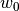
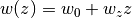
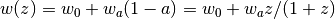
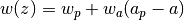
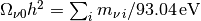
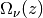
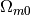

Cosmological Calculations (astropy.cosmology)¶
Introduction¶
The astropy.cosmology subpackage contains classes for representing
cosmologies, and utility functions for calculating commonly used
quantities that depend on a cosmological model. This includes
distances, ages and lookback times corresponding to a measured
redshift or the transverse separation corresponding to a measured
angular separation.
Getting Started¶
Cosmological quantities are calculated using methods of a
Cosmology object. For example, to calculate the
Hubble constant at z=0 (i.e., H0), and the number of transverse proper
kpc corresponding to an arcminute at z=3:
>>> from astropy.cosmology import WMAP9 as cosmo
>>> cosmo.H(0)
<Quantity 69.32 km / (Mpc s)>
>>> cosmo.kpc_proper_per_arcmin(3)
<Quantity 472.97709620405266 kpc / arcmin>
Here WMAP9 is a built-in object describing a cosmology with the
parameters from the 9-year WMAP results. Several other built-in
cosmologies are also available, see Built-in Cosmologies. The
available methods of the cosmology object are listed in the methods
summary for the FLRW class. If you’re using
IPython you can also use tab completion to print a list of the
available methods. To do this, after importing the cosmology as in the
above example, type cosmo. at the IPython prompt and then press
the tab key.
All of these methods also accept an arbitrarily shaped array of redshifts as input:
>>> from astropy.cosmology import WMAP9 as cosmo
>>> cosmo.comoving_distance([0.5, 1.0, 1.5])
<Quantity [ 1916.0694236 , 3363.07064333, 4451.74756242] Mpc>
You can create your own FLRW-like cosmology using one of the Cosmology classes:
>>> from astropy.cosmology import FlatLambdaCDM
>>> cosmo = FlatLambdaCDM(H0=70, Om0=0.3)
>>> cosmo
FlatLambdaCDM(H0=70 km / (Mpc s), Om0=0.3, Tcmb0=2.725 K,
Neff=3.04, m_nu=[ 0. 0. 0.] eV, Ob0=None)
Note the presence of additional cosmological parameters (e.g., Neff,
the number of effective neutrino species) with default values; these
can also be specified explicitly in the call to the constructor.
The cosmology subpackage makes use of units, so in many
cases returns values with units attached. Consult the documentation
for that subpackage for more details, but briefly, to access the
floating point or array values:
>>> from astropy.cosmology import WMAP9 as cosmo
>>> H0 = cosmo.H(0)
>>> H0.value, H0.unit
(69.32, Unit("km / (Mpc s)"))
Using astropy.cosmology¶
Most of the functionality is enabled by the FLRW
object. This represents a homogeneous and isotropic cosmology
(characterized by the Friedmann-Lemaitre-Robertson-Walker metric,
named after the people who solved Einstein’s field equation for this
special case). However, you can’t work with this class directly, as
you must specify a dark energy model by using one of its subclasses
instead, such as FlatLambdaCDM.
You can create a new FlatLambdaCDM object with
arguments giving the Hubble parameter and Omega matter (both at z=0):
>>> from astropy.cosmology import FlatLambdaCDM
>>> cosmo = FlatLambdaCDM(H0=70, Om0=0.3)
>>> cosmo
FlatLambdaCDM(H0=70 km / (Mpc s), Om0=0.3, Tcmb0=2.725 K,
Neff=3.04, m_nu=[ 0. 0. 0.] eV, Ob0=None)
This can also be done more explicitly using units, which is recommended:
>>> from astropy.cosmology import FlatLambdaCDM
>>> import astropy.units as u
>>> cosmo = FlatLambdaCDM(H0=70 * u.km / u.s / u.Mpc, Om0=0.3)
However, most of the parameters that accept units (H0, Tcmb0)
have default units, so unit quantities do not have to be used.
The exception are neutrino masses, where you must supply a
units if you want massive neutrinos.
The pre-defined cosmologies described in the Getting Started
section are instances of FlatLambdaCDM, and have
the same methods. So we can find the luminosity distance to
redshift 4 by:
>>> cosmo.luminosity_distance(4)
<Quantity 35842.353618623194 Mpc>
or the age of the universe at z = 0:
>>> cosmo.age(0)
<Quantity 13.461701658024014 Gyr>
They also accept arrays of redshifts:
>>> cosmo.age([0.5, 1, 1.5]).value
array([ 8.42128047, 5.74698053, 4.19645402])
See the FLRW and
FlatLambdaCDM object docstring for all the
methods and attributes available. In addition to flat Universes,
non-flat varieties are supported such as
LambdaCDM. There are also a variety of standard
cosmologies with the parameters already defined (see Built-in
Cosmologies):
>>> from astropy.cosmology import WMAP7 # WMAP 7-year cosmology
>>> WMAP7.critical_density(0) # critical density at z = 0
<Quantity 9.31000324385361e-30 g / cm3>
You can see how the density parameters evolve with redshift as well:
>>> from astropy.cosmology import WMAP7 # WMAP 7-year cosmology
>>> WMAP7.Om([0, 1.0, 2.0]), WMAP7.Ode([0., 1.0, 2.0])
(array([ 0.272 , 0.74898524, 0.90905239]),
array([ 0.72791572, 0.25055061, 0.0901026 ]))
Note that these don’t quite add up to one even though WMAP7 assumes a
flat Universe because photons and neutrinos are included. Also note
that they are unitless and so are not Quantity
objects.
It is possible to specify the baryonic matter density at redshift zero
at class instantiation by passing the keyword argument Ob0:
>>> from astropy.cosmology import FlatLambdaCDM
>>> cosmo = FlatLambdaCDM(H0=70, Om0=0.3, Ob0=0.05)
>>> cosmo
FlatLambdaCDM(H0=70 km / (Mpc s), Om0=0.3, Tcmb0=2.725 K,
Neff=3.04, m_nu=[ 0. 0. 0.] eV, Ob0=0.05)
In this case the dark matter only density at redshift zero is
available as class attribute Odm0 and the redshift evolution of
dark and baryonic matter densities can be computed using the methods
Odm and Ob, respectively. If Ob0 is not specified at class
instantiation it defaults to None and any method relying on it
being specified will raise a ValueError:
>>> from astropy.cosmology import FlatLambdaCDM
>>> cosmo = FlatLambdaCDM(H0=70, Om0=0.3)
>>> cosmo.Odm(1)
Traceback (most recent call last):
...
ValueError: Baryonic density not set for this cosmology, unclear
meaning of dark matter density
Cosmological instances have an optional name attribute which can be
used to describe the cosmology:
>>> from astropy.cosmology import FlatwCDM
>>> cosmo = FlatwCDM(name='SNLS3+WMAP7', H0=71.58, Om0=0.262, w0=-1.016)
>>> cosmo
FlatwCDM(name="SNLS3+WMAP7", H0=71.6 km / (Mpc s), Om0=0.262,
w0=-1.02, Tcmb0=2.725 K, Neff=3.04, m_nu=[ 0. 0. 0.] eV,
Ob0=None)
This is also an example with a different model for dark energy, a flat Universe with a constant dark energy equation of state, but not necessarily a cosmological constant. A variety of additional dark energy models are also supported – see Specifying a dark energy model.
A important point is that the cosmological parameters of each
instance are immutable – that is, if you want to change, say,
Om, you need to make a new instance of the class. To make
this more convenient, a clone operation is provided, which
allows you to make a copy with specified values changed.
Note that you can’t change the type of cosmology with this operation
(e.g., flat to non-flat). For example:
>>> from astropy.cosmology import WMAP9
>>> newcosmo = WMAP9.clone(name='WMAP9 modified', Om0=0.3141)
>>> WMAP9.H0, newcosmo.H0 # some values unchanged
(<Quantity 69.3... km / (Mpc s)>, <Quantity 69.3... km / (Mpc s)>)
>>> WMAP9.Om0, newcosmo.Om0 # some changed
(0.286..., 0.314...)
>>> WMAP9.Ode0, newcosmo.Ode0 # Indirectly changed since this is flat
(0.713..., 0.685...)
Finding the Redshift at a Given Value of a Cosmological Quantity¶
If you know a cosmological quantity and you want to know the
redshift which it corresponds to, you can use z_at_value:
>>> import astropy.units as u
>>> from astropy.cosmology import Planck13, z_at_value
>>> z_at_value(Planck13.age, 2 * u.Gyr)
3.1981226843560968
For some quantities there can be more than one redshift that satisfies
a value. In this case you can use the zmin and zmax keywords
to restrict the search range. See the z_at_value docstring for more
detailed usage examples.
Built-in Cosmologies¶
A number of pre-loaded cosmologies are available from analyses using the WMAP and Planck satellite data. For example,
>>> from astropy.cosmology import Planck13 # Planck 2013
>>> Planck13.lookback_time(2) # lookback time in Gyr at z=2
<Quantity 10.511841788576083 Gyr>
A full list of the pre-defined cosmologies is given by
cosmology.parameters.available, and summarized below:
| Name | Source | H0 | Om | Flat |
|---|---|---|---|---|
| WMAP5 | Komatsu et al. 2009 | 70.2 | 0.277 | Yes |
| WMAP7 | Komatsu et al. 2011 | 70.4 | 0.272 | Yes |
| WMAP9 | Hinshaw et al. 2013 | 69.3 | 0.287 | Yes |
| Planck13 | Planck Collab 2013, Paper XVI | 67.8 | 0.307 | Yes |
| Planck15 | Planck Collab 2015, Paper XIII | 67.7 | 0.307 | Yes |
Currently, all are instances of FlatLambdaCDM.
More details about exactly where each set of parameters come from
are available in the docstring for each object:
>>> from astropy.cosmology import WMAP7
>>> print(WMAP7.__doc__)
WMAP7 instance of FlatLambdaCDM cosmology
(from Komatsu et al. 2011, ApJS, 192, 18, doi: 10.1088/0067-0049/192/2/18.
Table 1 (WMAP + BAO + H0 ML).)
Specifying a dark energy model¶
In addition to the standard FlatLambdaCDM model
described above, a number of additional dark energy models are
provided. FlatLambdaCDM
and LambdaCDM assume that dark
energy is a cosmological constant, and should be the most commonly
used cases; the former assumes a flat Universe, the latter allows
for spatial curvature. FlatwCDM and
wCDM assume a constant dark
energy equation of state parameterized by . Two forms of a
variable dark energy equation of state are provided: the simple first
order linear expansion  by
w0wzCDM, as well as the common CPL form by
w0waCDM:  and its generalization to include a pivot
redshift by wpwaCDM: .
Users can specify their own equation of state by sub-classing
FLRW. See the provided subclasses for
examples. It is recommended, but not required, that all arguments to the
constructor of a new subclass be available as properties, since the
clone method assumes this is the case. It is also advisable
to stick to subclassing FLRW rather than one of
its subclasses, since some of them use internal optimizations that
also need to be propagated to any subclasses. Users wishing to
use similar tricks (which can make distance calculations much faster)
should consult the cosmology module source code for details.
Photons and Neutrinos¶
The cosmology classes include the contribution to the energy density
from both photons and neutrinos. By default, the latter are assumed
massless. The three parameters controlling the properties of these
species, which are arguments to the initializers of all the
cosmological classes, are Tcmb0 (the temperature of the CMB at z=0),
Neff, the effective number of neutrino species, and m_nu, the rest
mass of the neutrino species. Tcmb0 and m_nu should be expressed
as unit Quantities. All three have standard default values (2.725 K,
3.04, and 0 eV respectively; the reason that Neff is not 3 primarily
has to do with a small bump in the neutrino energy spectrum due to
electron-positron annihilation, but is also affected by weak
interaction physics).
Massive neutrinos are treated using the approach described in the WMAP 7-year cosmology paper (Komatsu et al. 2011, ApJS, 192, 18, section 3.3). This is not the simple  approximation. Also note that the values of  include both the kinetic energy and the rest-mass energy components, and that the Planck13 and Planck15 cosmologies includes a single species of neutrinos with non-zero mass (which is not included in ).
Adding massive neutrinos can have significant performance implications. In particular, the computation of distance measures and lookback times are factors of 3-4 slower than in the massless neutrino case. Therefore, if you need to compute a lot of distances in such a cosmology and performance is critical, it is particularly useful to calculate them on a grid and use interpolation.
The contribution of photons and neutrinos to the total mass-energy density can be found as a function of redshift:
>>> from astropy.cosmology import WMAP7 # WMAP 7-year cosmology
>>> WMAP7.Ogamma0, WMAP7.Onu0 # Current epoch values
(4.985694972799396e-05, 3.442154948307989e-05)
>>> z = [0, 1.0, 2.0]
>>> WMAP7.Ogamma(z), WMAP7.Onu(z)
(array([ 4.98569497e-05, 2.74574409e-04, 4.99881391e-04]),
array([ 3.44215495e-05, 1.89567887e-04, 3.45121234e-04]))
If you want to exclude photons and neutrinos from your calculations,
simply set Tcmb0 to 0:
>>> from astropy.cosmology import FlatLambdaCDM
>>> import astropy.units as u
>>> cos = FlatLambdaCDM(70.4 * u.km / u.s / u.Mpc, 0.272, Tcmb0 = 0.0 * u.K)
>>> cos.Ogamma0, cos.Onu0
(0.0, 0.0)
Neutrinos can be removed (while leaving photons) by setting Neff to 0:
>>> from astropy.cosmology import FlatLambdaCDM
>>> cos = FlatLambdaCDM(70.4, 0.272, Neff=0)
>>> cos.Ogamma([0, 1, 2]) # Photons are still present
array([ 4.98569497e-05, 2.74623215e-04, 5.00051839e-04])
>>> cos.Onu([0, 1, 2]) # But not neutrinos
array([ 0., 0., 0.])
The number of neutrino species is assumed to be the floor of Neff,
which in the default case is 3. Therefore, if non-zero neutrino masses
are desired, then 3 masses should be provided. However, if only one
value is provided, all the species are assumed to have the same mass.
Neff is assumed to be shared equally between each species.
>>> from astropy.cosmology import FlatLambdaCDM
>>> import astropy.units as u
>>> H0 = 70.4 * u.km / u.s / u.Mpc
>>> m_nu = 0 * u.eV
>>> cosmo = FlatLambdaCDM(H0, 0.272, m_nu=m_nu)
>>> cosmo.has_massive_nu
False
>>> cosmo.m_nu
<Quantity [ 0., 0., 0.] eV>
>>> m_nu = [0.0, 0.05, 0.10] * u.eV
>>> cosmo = FlatLambdaCDM(H0, 0.272, m_nu=m_nu)
>>> cosmo.has_massive_nu
True
>>> cosmo.m_nu
<Quantity [ 0. , 0.05, 0.1 ] eV>
>>> cosmo.Onu([0, 1.0, 15.0])
array([ 0.00326988, 0.00896783, 0.0125786 ])
>>> cosmo.Onu(1) * cosmo.critical_density(1)
<Quantity 2.444380380370406e-31 g / cm3>
While these examples used FlatLambdaCDM,
the above examples also apply for all of the other cosmology classes.
For Developers: Using astropy.cosmology inside Astropy¶
If you are writing code for the Astropy core or an affiliated package, it’s often useful to assume a default cosmology, so that the exact cosmology doesn’t have to be specified every time a function or method is called. In this case it’s possible to specify a “default” cosmology.
You can set the default cosmology to a pre-defined value by using the
“default_cosmology” option in the [cosmology.core] section of the
configuration file (see Configuration system (astropy.config)). Alternatively, you can
use the set function of default_cosmology to
set a cosmology for the current Python session. If you haven’t set a
default cosmology using one of the methods described above, then the
cosmology module will default to using the 9-year WMAP parameters.
It is strongly recommended that you use the default cosmology through
the default_cosmology science state object. An
override option can then be provided using something like the
following:
def myfunc(..., cosmo=None):
from astropy.cosmology import default_cosmology
if cosmo is None:
cosmo = default_cosmology.get()
... your code here ...
This ensures that all code consistently uses the default cosmology unless explicitly overridden.
Note
In general it’s better to use an explicit cosmology (for example
WMAP9.H(0) instead of
cosmology.default_cosmology.get().H(0)). Use of the default
cosmology should generally be reserved for code that will be
included in the Astropy core or an affiliated package.
See Also¶
- Hogg, “Distance measures in cosmology”, http://arxiv.org/abs/astroph/9905116
- Linder, “Exploring the Expansion History of the Universe”, http://arxiv.org/abs/astro-ph/0208512
- NASA’s Legacy Archive for Microwave Background Data Analysis, http://lambda.gsfc.nasa.gov/
Range of validity and reliability¶
The code in this sub-package is tested against several widely-used
online cosmology calculators, and has been used to perform many
calculations in refereed papers. You can check the range of redshifts
over which the code is regularly tested in the module
astropy.cosmology.tests.test_cosmology. If you find any bugs,
please let us know by opening an issue at the github repository!
The built in cosmologies use the parameters as listed in the respective papers. These provide only a limited range of precision, and so you should not expect derived quantities to match beyond that precision. For example, the Planck 2013 and 2015 results only provide the Hubble constant to 4 digits. Therefore, they shouldn’t be expected to match the age quoted by the Planck team to better than that, despite the fact that 5 digits are quoted in the papers.
Reference/API¶
astropy.cosmology Package¶
astropy.cosmology contains classes and functions for cosmological distance measures and other cosmology-related calculations.
See the Astropy documentation for more detailed usage examples and references.
Functions¶
z_at_value(func, fval[, zmin, zmax, ztol, ...]) |
Find the redshift z at which func(z) = fval. |
Classes¶
FLRW(H0, Om0, Ode0[, Tcmb0, Neff, m_nu, ...]) |
A class describing an isotropic and homogeneous (Friedmann-Lemaitre-Robertson-Walker) cosmology. |
FlatLambdaCDM(H0, Om0[, Tcmb0, Neff, m_nu, ...]) |
FLRW cosmology with a cosmological constant and no curvature. |
Flatw0waCDM(H0, Om0[, w0, wa, Tcmb0, Neff, ...]) |
FLRW cosmology with a CPL dark energy equation of state and no curvature. |
FlatwCDM(H0, Om0[, w0, Tcmb0, Neff, m_nu, ...]) |
FLRW cosmology with a constant dark energy equation of state and no spatial curvature. |
LambdaCDM(H0, Om0, Ode0[, Tcmb0, Neff, ...]) |
FLRW cosmology with a cosmological constant and curvature. |
default_cosmology() |
The default cosmology to use. |
w0waCDM(H0, Om0, Ode0[, w0, wa, Tcmb0, ...]) |
FLRW cosmology with a CPL dark energy equation of state and curvature. |
w0wzCDM(H0, Om0, Ode0[, w0, wz, Tcmb0, ...]) |
FLRW cosmology with a variable dark energy equation of state and curvature. |
wCDM(H0, Om0, Ode0[, w0, Tcmb0, Neff, m_nu, ...]) |
FLRW cosmology with a constant dark energy equation of state and curvature. |
wpwaCDM(H0, Om0, Ode0[, wp, wa, zp, Tcmb0, ...]) |
FLRW cosmology with a CPL dark energy equation of state, a pivot redshift, and curvature. |